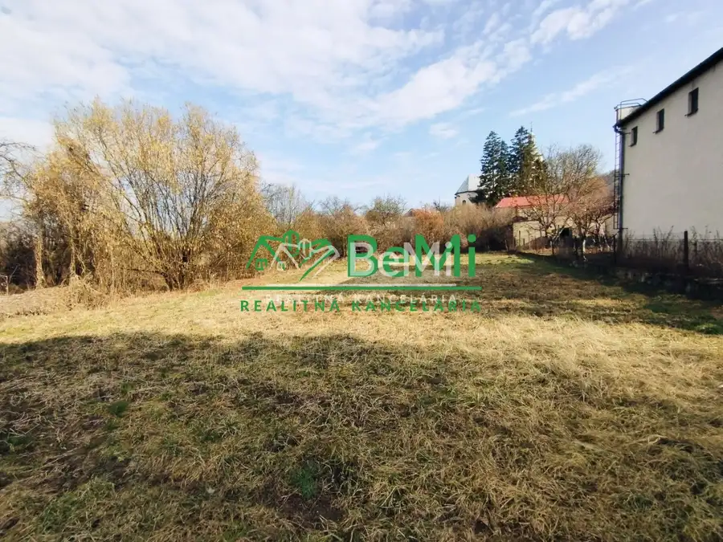
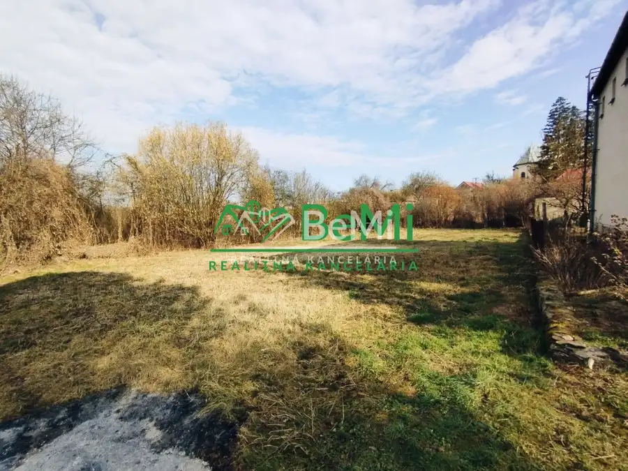
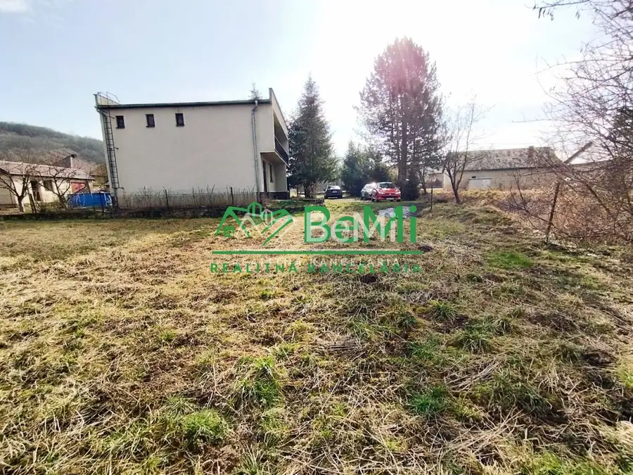

Stavebný pozemok-Trebeľovce- na predaj
Trebeľovce



- Plocha600 m²
- VlastníctvoOsobné
O nehnuteľnosti
ID:096-14-VETOEVideoobhliadka na:youtu.be/O7M12HqRAvs (po skopírovaní linku do prehliadača sa Vám zobrazí)Ponúkame Vám exkluzívne na predaj pekný rovinatý stavebný pozemok v kludnej časti Trebeľoviec. Pozemok je orientovaný na juhozápad, má rozlohu 600 m2. Všetky inžinierske siete sú v dostupnosti - elektrina, obecná voda, ako aj prípojka na plyn. Na pozemku sa nachàdza aj studňa. Septik, alebo žumpu bude treba vybudovať.Pozemok je z časti oplotený, prístupová cesta je obecná, ďalšia časť je v podielovom spoluvlastníctve majiteľa. Kanalizácia v obci je vybudovaná na odvádzanie dažďovej vody.Obec Trebeľovce sa nachádza na juhu Slovenska v okrese Lučenec , približne 12 km od mesta . Má čiastočnú občianskú vybavenosť a pravidelé autobusové spojenie do Lučenca aj do kolitých obcí. V blízkej obci Rapovce sa nachádza známe kúpalisko Novolandia s unikátnou termálnou vodou.Nehnuteľnosť je v osobnom vlastníctve a je bez tiarch. Je vhodná aj na rekreačné účely, stavbu víkendového domu.Cena : 13 000 €Kontaktovať ma môžte telefonicky na čísle : 0918678901 Zo zahraničia na: +421918678901, alebo mailom na : tothova@realitybemi.skV cene sú obsiahnuté všetky poplatky za kompletný servis.Prostredníctvom nášho finančného poradcu Vám radi pomôžeme s kúpou nehnuteľnosti.
Parametre
- Druh
- Pozemok pre rodinné domy
- Dátum zverejnenia
- 03. 09. 2025
- Plocha pozemku
- 600 m²
- Typ
- Predaj
- Vlastníctvo
- Osobné
- Voda
- Na pozemku - Studňa